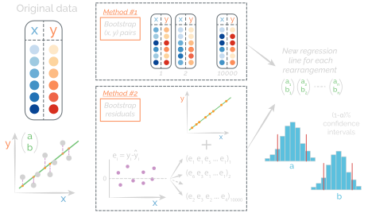
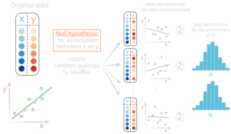
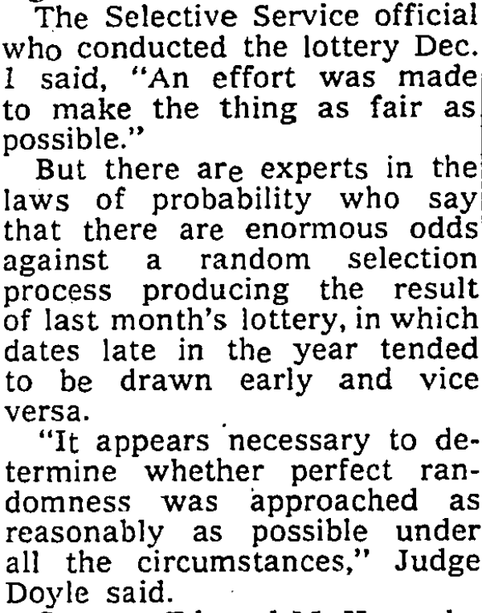

Last Time...
- Correlation, $r$ or $\rho$, indicates whether or not a, ideally, linear relationship exists.
- Correlation is affected by heteroscedasticity.
- Regression analysis determines the prediction line that minimizes the distance between each value and the line.
- This can be done by iteratively calculating a new line (starting with an initial guess) and finding the minimum when the squares of the errors, aka, residuals are summed.
Parameters of the "fit"
- Calculate the SST ($SS_{\epsilon}$).
- Change the slope parameter, $\beta_1$, over a range.
- Change the intercept parameter, $\beta_0$, over a range.
- Find the point where the resulting surface, $SS_{\epsilon}$, is the lowest.
Why do we want the regression line?
What can we do with it?
- Prediction (by interpolation).
- Physical interpretation of $\beta_0$ and $\beta_1$.
- Model selection (think about changes in either $\beta_0$ or $\beta_1$)
- "Explain Variance" (We will discuss this during ANOVA)
- How does Regression work?
- Find the best fit line!
Prediction
Remarkably strong linear trend in 100m sprint!

Momentous Sprint at the 2156 Olympics? (Nature 431, 2004)
What's wrong?
no evidence that the addition of extra parameters improved the model fit significantly from the simple linear relationship
95% confidence interval using Markov Chain Monte Carlo simulation: women could overtake men as early as 2064 or as late as 2788
The regression line should only be used to predict values within or close to those contained in the dataset
DO NOT EXTRAPOLATE!
Prediction
Remarkably strong linear trend in 100m sprint!
Momentous Sprint at the 2156 Olympics? (Nature 431, 2004)
| Year | Predicted | Real |
| 2008 | 10.57 | 10.78 |
| 2012 | 10.50 | 10.75 |
| 2016 | 10.43 | 10.71 |
| Year | Predicted | Real |
| 2008 | 9.73 | 9.69 |
| 2012 | 9.68 | 9.63 |
| 2016 | 9.64 | 9.81 |
Interpret Parameters
Slope
- Slope is the change in $y$ given a certain change in $x$.
- Often times we just want to know at what rate our data area changing.
- Or we can think of this as a ratio, such as predicting cost per unit.
Intercept
- The intercept tells you the value when your X variable is zero.
- You can think of this as the offset, for example, the offset cost to run a business, like rent on a storefront and the initial manufacturing costs, etc.
- This can also be interpreted as the initial speed, such as at $t=0$.
Linear regression for prediction
Inference
So far, we only used regression methods to describe a sample (dataset) and did not make statistical inferences about the larger population. Now, let's make inferences about a relationship in the population . That is, let's estimate the uncertainty of the parameters of our model.
Some questions involving the population that we might ask when analyzing a relationship are:
- Does the observed relationship also occur in the population?
- For a linear relationship, what is the slope of the regression line in the population?
- What is the mean value of the response variable (y) for individuals with a specific value of the explanatory variable (x)?
- What interval of values predicts the value of the response variable (y) for an individual with a specific value of the explanatory variable (x)?
Linear regression to describe a population
The regression equation for a simple linear relationship in a population can be written as:
$$\hat{Y} = \beta_0 + \beta_1X + \epsilon$$
- $\hat{Y}$ represents the mean or expected value of y for individuals in the population who all have the same particular value of x. Note that $\hat{y}$ is an estimate of $\hat{Y}$
- $\beta_0$ is the intercept of the line in the population
- $\beta_1$ is the slope of the regression line in the population. Note that if the slope $\beta_1 = 0$, there is no linear relationship in the population.
Unless we measure the entire population, we cannot know the numerical values of $\beta_0$ and $\beta_1$. These are population parameters that we estimate using the corresponding sample statistics.
Tipping pattern
The owner of a bistro called First Crush in Potsdam, New York, was interested in studying the tipping patterns of its patrons.
He collected restaurant bills over a two-week period that he believes provide a good sample of his customers. He recorded the data from 157 bills including:
- amount of the bill
- amount of the tip
- corresponding percentage of the tip
- number of customers in the group
- whether or not a credit card was used
- day of the week
- coded identity of the server
Tipping pattern data
1) We want to predict the tip amount based on the bill amount.
The scatterplot of the data show:
- strong positive relationship in the data
- few outliers (big tippers) above the main pattern
If we calculate correlation, we obtain $r=0.915$, reinforcing the fact that the data have a strong positive linear relationship.
We can build a linear model of the association.
Tipping pattern data
1) We want to predict the tip amount based on the bill amount.
Regression line equation:
$y=-0.292+\color{red}{0.182}x$
What does this slope mean?
$R^2=0.837$
What does this $R^2$ mean?
The slope of $0.182$ indicates that for every extra dollar in the restaurant bill the tip will increase, on average, by about $\$0.18$. (The typical tip rate at this restaurant is roughly $18\%$ of the total bill.)
$\approx 84\%$ of the variation in the amount in tip can be explained by the variation in bill amount
Inference about the slope
How to get an estimate of the true value of the average tip rate at First Crush?
Compute the $95\%$ confidence intervals of the slope ($\beta_1$) for the relationship between tip amount and bill amount.
Method #1: Bootstrap of the (x,y) pairs data points.
generation of pseudo data is the more usual form of bootstrapping for regression analysis. The approach is robust in that if an incorrect model is fitted an appropriate measure of parameter uncertainty is still obtained.
Method #2: Bootstrap of the residuals.
implicitly assumes that the functional form of the model is correct (even though no assumption is made about the shape of the error distribution).
Bootstrap CIs for regression
Inference about the slope
Inference about the slope
Slope sampling distribution
We are 95% confident that the true value of the population slope $\beta_1$ is in the interval $(0.166, 0.201)$. The true average tipping rate of the patrons of First Crush is between $16\%$ and $20\%$.
Intercept sampling distribution
We are 95% confident that the true value of the population intercept $\beta_0$ is in the interval $(-0.674, 0.048)$. If there is no bill, there is probably no tip
What about tip percentage?
Most people use a fairly regular percentage (which may vary from person to person) of the total bill when deciding how big a tip to leave.
Some economists have theorized that i) people tend to reduce that percentage when the bill gets large, but in the other hand ii) larger groups of customers might be more generous as a group due to peer pressure. (Loewenstein, G. and Prelec, D. (1992). Anomalies in Intertemporal Choice: Evidence and an Interpretation, Quarterly Journal of Economics, 1992;107:573–97)
How could we study these two questions using
our dataset?
Could we use regression analysis? What parameter would
particularly be of interest?
What about tip percentage?
From our dataset, we can calculate the percentage of the bill that each tip represents, and display the scatterplot of the percentage in fuction of the total bill.
We can compute the $95\%$ confidence interval of the slope of this regression line and check if $0$ (no positive association) is inside.
We select bootstrap samples (pairs, n=157), with replacement, from the dataset. For each bootstrap sample, we run the regression model, compute the sample slope, and save it to form the bootstrap distribution.
What about tip percentage?
From our dataset, we can calculate the percentage of the bill that each tip represents, and display the scatterplot of the percentage in fuction of the total bill.
We can compute the $95\%$ confidence interval of the slope of this regression line and check if $0$ (no positive association) is inside.
It does not include the null value of zero, so we reject $H_0$ in favor of a two-tailed alternative at a the $5\%$ level. In fact, since the confidence interval includes only positive values, this strongly suggests that the true slope is above zero. Thus we have evidence that there is some positive relationship between the amount of a tip and the size of a bill at this restaurant.
What about the outliers?
The scatterplot show a few possible outliers from the pattern of the rest of the data. Three very generous customers left tips that were more than 30% of the bill.
Do those points have had a large effect on the conclusions we did based on the slopes of either of the relationships we studied?
What about the outliers?
One way to investigate this question is to omit those cases from the data and re-run the analysis without them.
What about the outliers?
| Tip vs Bill | Tip (%) vs Bill | |
| Full dataset | $y=-0.292+\color{orange}{0.182}x$ | $y=15.508+\color{orange}{0.049}x$ |
| No outliers | $y=-0.404+\color{orange}{0.183}x$ | $y=14.918+\color{orange}{0.056}x$ |
What about the outliers?
| Tip vs Bill | Tip (%) vs Bill | |
| Full dataset | $y=-0.292+\color{orange}{0.182}x$ | $y=15.508+\color{orange}{0.049}x$ |
| No outliers | $y=-0.404+\color{orange}{0.183}x$ | $y=14.918+\color{orange}{0.056}x$ |
After dropping the three generous data points, we see that the outliers have a negligible effect on the slopes of the relationships we studied.
| Tip vs Bill | Tip (%) vs Bill | |
| Full dataset | $[0.166, 0.201]$ | $[0.005, 0.094]$ |
| No outliers | $[0.168, 0.202]$ | $[0.015, 0.101]$ |
The 95% confidence intervals for these slopes, based on the data without outliers, are a bit narrower, but otherwise similar to what we obtained, from the full dataset.
The outliers did not affect our conclusions.
Scope of our conclusions?
Data Collection: What population can we draw inferences about from the dataset we anlayze? The sample was generated by collecting all bills over several nights at the First Crush restaurant.
Because the data are all from one restaurant, the population of interest is all bills and tips at this restaurant.
The original sample was not a random sample of all bills, but rather the data were collected from all bills in a certain time frame. That might introduce bias if the days for the bills in the sample are different in some substantial way (for example, over a holiday season or only weekends). However, the owner indicates that the days for which bills were sampled are representative of the business at his restaurant.
As data analysts we might alert the owner to the possibility of bias when reporting our findings, but we proceed for now with the assumption that the sample is representative of all bills at this restaurant.
The 1970 military draft lottery
In November of 1969, with the Vietnam War raging, President Nixon signed an executive order to reinstitute the draft. Men were drafted to fill vacancies in the United States Armed Forces that could not be filled through voluntary means.
In an attempt to expose male youth "fasirly" to the risk of being drafted, the Selective Service held a lottery on December 1, 1969 to allocate birthdates at random. Men were then drafted in the order that their birth days were drawn.
The selection process
The order stipulated that the selection be a random process based on the birthdays of men born between January 1, 1944 and December 31, 1950.
The Selective Service placed the days of the year, including February 29, into 366 plastic capsules. These capsules were placed in a glass container, mixed, then drawn one at a time.
The selection process
The first capsule drawn contained the date September 14. This date was assigned the rank 1.
The second date drawn, April 24, was assigned rank 2, and so on ...
The selection process
Those eligible for the draft who were born on September 14 (rank 1) would be the first selected to serve in Vietnam.
Once all eligible men born on this date were inducted into the service, then the Selective Service would begin to induct men born on April 24 (rank 2), etc ...
Note: It was estimated by the Pentagon that men with draft numbers 200 to 366, would escape the draft entirely. In fact, no man with a draft number higher than 195 was called to duty.
Was the lottery really random?
What should we expect if we plot the draft number (rank assigned) against the day of the year drawn?
Does the selection process appear random to you?
Was the lottery really random?
What should we expect if we plot the draft number (rank assigned) against the day of the year drawn?
What about now?
Was the lottery really random?
What should we expect if we plot the draft number (rank assigned) against the day of the year drawn?
Is it really random?
How could we check the randomness of the data using statistics?
(and linear regression )
Was the lottery really random?
How likely would it be to observe a slope of $-0.23$ if there was no association between the day of the year selected and the rank assigned?
If there was no association, the slope of the underlying population shouldn't be different than $0$.
We could solve this again using confidence intervals, but let's do some null hypothesis testing:
$H_0$: $\beta_1=0$
$H_a$: $\beta_1\neq0$
Linear regression NHST
Testing the randomness of the data
Sampling distribution of the slopes if the null hypothesis was true:
None of the slopes obtained by simulating the no-association condition (null hypothesis) are as extreme as the initial slope obtained by finding the best fit on our original dataset.
Testing the randomness of the data
Sampling distribution of the slopes if the null hypothesis was true:
This strongly suggest that there was, in fact, a negative
association between the birthday drawn and the draft rank that was assigned to this birthday.
The lottery was not random!
Change of the lottery process
NY Times article - January 4, 1970
The lottery process was modified for the subsequent years and was shown to be really random .
Summary
Regression analysis is a powerful method with a broad array of applications.
The same Null hypothesis and confidence intervals determinations methods as what we used previously on different statistics can be applied to the linear regresssion parameters.